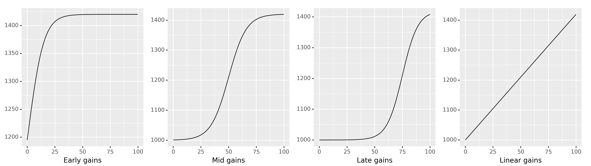

Chapter 4: Linear models
Contents
Chapter 4: Linear models#
Concept map:

Notebook setup#
import numpy as np
import pandas as pd
import scipy as sp
import seaborn as sns
from scipy.stats import uniform, norm
# notebooks figs setup
%matplotlib inline
import matplotlib.pyplot as plt
sns.set(rc={'figure.figsize':(8,5)})
blue, orange = sns.color_palette()[0], sns.color_palette()[1]
# silence annoying warnings
import warnings
warnings.filterwarnings('ignore')
4.1 Linear models for relationship between two numeric variables#
def’n linear model: y ~ m*x + b, a.k.a. linear regression
Amy has collected a new dataset:
Instead of receiving a fixed amount of stats training (100 hours), each employee now receives a variable amount of stats training (anywhere from 0 hours to 100 hours)
Amy has collected ELV values after one year as previously
Goal find best fit line for relationship \(\textrm{ELV} \sim \beta_0 + \beta_1\!*\!\textrm{hours}\)
Limitation: we assume the change in ELV is proportional to number of hours (i.e. linear relationship). Other types of hours-ELV relationship possible, but we will not be able to model them correctly (see figure below).
New dataset#
The
hourscolumn contains thexvalues (how many hours of statistics training did the employee receive),The
ELVcolumn contains theyvalues (the employee ELV after one year)

# Load data into a pandas dataframe
df2 = pd.read_excel("data/ELV_vs_hours.ods", sheet_name="Data")
# df2
df2.describe()
| hours | ELV | |
|---|---|---|
| count | 33.000000 | 33.000000 |
| mean | 57.909091 | 1154.046364 |
| std | 28.853470 | 123.055405 |
| min | 4.000000 | 929.200000 |
| 25% | 35.000000 | 1062.210000 |
| 50% | 65.000000 | 1163.890000 |
| 75% | 83.000000 | 1253.620000 |
| max | 99.000000 | 1384.480000 |
# plot ELV vs. hours data
sns.scatterplot(x='hours', y='ELV', data=df2)
<AxesSubplot:xlabel='hours', ylabel='ELV'>
# linear model plot (preview)
# sns.lmplot(x='hours', y='ELV', data=df2, ci=False)
Types of linear relationship between input and output#
Different possible relationships between the number of hours of stats training and ELV gains:

4.2 Fitting linear models#
Main idea: use
fitmethod fromstatsmodels.olsand a formula (approach 1)Visual inspection
Results of linear model fit are:
beta0= \(\beta_0\) = baseline ELV (y-intercept)beta1= \(\beta_1\) = increase in ELV for each additional hour of stats training (slope)
Five more alternative fitting methods (bonus material): 2. fit using statsmodels
OLS3. solution usinglinregressfromscipy4. solution usingoptimizefromscipy5. linear algebra solution usingnumpy6. solution usingLinearRegressionmodel from scikit-learn
Using statsmodels formula API#
The statsmodels Python library offers a convenient way to specify statistics model as a “formula” that describes the relationship we’re looking for.
Mathematically, the linear model is written:
\(\large \textrm{ELV} \ \ \sim \ \ \beta_0\cdot 1 \ + \ \beta_1\cdot\textrm{hours}\)
and the formula is:
ELV ~ 1 + hours
Note the variables \(\beta_0\) and \(\beta_1\) are omitted, since the whole point of fitting a linear model is to find these coefficients. The parameters of the model are:
Instead of \(\beta_0\), the constant parameter will be called
InterceptInstead of a new name \(\beta_1\), we’ll call it
hourscoefficient (i.e. the coefficient associated with thehoursvariable in the model)
import statsmodels.formula.api as smf
model = smf.ols('ELV ~ 1 + hours', data=df2)
result = model.fit()
# extact the best-fit model parameters
beta0, beta1 = result.params
beta0, beta1
(1005.6736305656403, 2.562166505145919)
# data points
sns.scatterplot(x='hours', y='ELV', data=df2)
# linear model for data
x = df2['hours'].values # input = hours
ymodel = beta0 + beta1*x # output = ELV
sns.lineplot(x, ymodel)
<AxesSubplot:xlabel='hours', ylabel='ELV'>
result.summary()
| Dep. Variable: | ELV | R-squared: | 0.361 |
|---|---|---|---|
| Model: | OLS | Adj. R-squared: | 0.340 |
| Method: | Least Squares | F-statistic: | 17.51 |
| Date: | Sat, 16 Jul 2022 | Prob (F-statistic): | 0.000218 |
| Time: | 21:53:56 | Log-Likelihood: | -197.75 |
| No. Observations: | 33 | AIC: | 399.5 |
| Df Residuals: | 31 | BIC: | 402.5 |
| Df Model: | 1 | ||
| Covariance Type: | nonrobust |
| coef | std err | t | P>|t| | [0.025 | 0.975] | |
|---|---|---|---|---|---|---|
| Intercept | 1005.6736 | 39.499 | 25.461 | 0.000 | 925.115 | 1086.232 |
| hours | 2.5622 | 0.612 | 4.184 | 0.000 | 1.313 | 3.811 |
| Omnibus: | 4.012 | Durbin-Watson: | 2.135 |
|---|---|---|---|
| Prob(Omnibus): | 0.135 | Jarque-Bera (JB): | 2.166 |
| Skew: | -0.368 | Prob(JB): | 0.339 |
| Kurtosis: | 1.983 | Cond. No. | 146. |
Notes:
[1] Standard Errors assume that the covariance matrix of the errors is correctly specified.
Alternative model fitting methods#
fit using statsmodels
OLSsolution using
linregressfromscipysolution using
minimizefromscipylinear algebra solution using
numpysolution using
LinearRegressionmodel from scikit-learn
Data pre-processing#
The statsmodels formula ols approach we used above was able to get the data
directly from the dataframe df2, but some of the other model fitting methods
require data to be provided as regular arrays: the x-values and the y-values.
# extract hours and ELV data from df2
x = df2['hours'].values # hours data as an array
y = df2['ELV'].values # ELV data as an array
x.shape, y.shape
# x
((33,), (33,))
Two of the approaches required “packaging” the x-values along with a column of ones,
to form a matrix (called a design matrix). Luckily statsmodels provides a convenient function for this:
import statsmodels.api as sm
# add a column of ones to the x data
X = sm.add_constant(x)
X.shape
# X
(33, 2)
2. fit using statsmodels OLS#
model2 = sm.OLS(y, X)
result2 = model2.fit()
# result2.summary()
result2.params
array([1005.67363057, 2.56216651])
3. solution using linregress from scipy#
from scipy.stats import linregress
result3 = linregress(x, y)
result3.intercept, result3.slope
(1005.6736305656411, 2.562166505145915)
4. Using an optimization approach#
from scipy.optimize import minimize
def sse(beta, x=x, y=y):
"""Compute the sum-of-squared-errors objective function."""
sumse = 0.0
for xi, yi in zip(x, y):
yi_pred = beta[0] + beta[1]*xi
ei = (yi_pred-yi)**2
sumse += ei
return sumse
result4 = minimize(sse, x0=[0,0])
beta0, beta1 = result4.x
beta0, beta1
(1005.6735312616879, 2.5621679129172805)
5. Linear algebra solution#
We obtain the least squares solution using the Moore–Penrose inverse formula: $\( \large \vec{\beta} = (X^{\sf T} X)^{-1}X^{\sf T}\; \vec{y} \)$
# 5. linear algebra solution using `numpy`
import numpy as np
result5 = np.linalg.inv(X.T.dot(X)).dot(X.T).dot(y)
beta0, beta1 = result5
beta0, beta1
(1005.6736305656412, 2.562166505145917)
Using scikit-learn#
# 6. solution using `LinearRegression` from scikit-learn
from sklearn import linear_model
model6 = linear_model.LinearRegression()
model6.fit(x[:,np.newaxis], y)
model6.intercept_, model6.coef_
(1005.673630565641, array([2.56216651]))
4.3 Interpreting linear models#
model fit checks
\(R^2\) coefficient of determination = the proportion of the variation in the dependent variable that is predictable from the independent variable
plot of residuals
many other: see scikit docs
hypothesis tests
is slope zero or nonzero? (and CI interval)
caution: cannot make any cause-and-effect claims; only a correlation
Predictions
given best-fir model obtained from data, we can make predictions (interpolations),
e.g., what is the expected ELV after 50 hours of stats training?
Interpreting the results#
Let’s review some of the other data included in the results.summary() report for the linear model fit we did earlier.
result.summary()
| Dep. Variable: | ELV | R-squared: | 0.361 |
|---|---|---|---|
| Model: | OLS | Adj. R-squared: | 0.340 |
| Method: | Least Squares | F-statistic: | 17.51 |
| Date: | Sat, 16 Jul 2022 | Prob (F-statistic): | 0.000218 |
| Time: | 21:53:56 | Log-Likelihood: | -197.75 |
| No. Observations: | 33 | AIC: | 399.5 |
| Df Residuals: | 31 | BIC: | 402.5 |
| Df Model: | 1 | ||
| Covariance Type: | nonrobust |
| coef | std err | t | P>|t| | [0.025 | 0.975] | |
|---|---|---|---|---|---|---|
| Intercept | 1005.6736 | 39.499 | 25.461 | 0.000 | 925.115 | 1086.232 |
| hours | 2.5622 | 0.612 | 4.184 | 0.000 | 1.313 | 3.811 |
| Omnibus: | 4.012 | Durbin-Watson: | 2.135 |
|---|---|---|---|
| Prob(Omnibus): | 0.135 | Jarque-Bera (JB): | 2.166 |
| Skew: | -0.368 | Prob(JB): | 0.339 |
| Kurtosis: | 1.983 | Cond. No. | 146. |
Notes:
[1] Standard Errors assume that the covariance matrix of the errors is correctly specified.
Model parameters#
beta0, beta1 = result.params
result.params
Intercept 1005.673631
hours 2.562167
dtype: float64
The \(R^2\) coefficient of determination#
\(R^2 = 1\) corresponds to perfect prediction
result.rsquared
0.36091871798872777
Hypothesis testing for slope coefficient#
Is there a non-zero slope coefficient?
null hypothesis \(H_0\):
hourshas no effect onELV, which is equivalent to \(\beta_1 = 0\): $\( \large H_0: \qquad \textrm{ELV} \sim \mathcal{N}(\color{red}{\beta_0}, \sigma^2) \qquad \qquad \qquad \)$alternative hypothesis \(H_A\):
hourshas an effect onELV, and the slope is not zero, \(\beta_1 \neq 0\): $\( \large H_A: \qquad \textrm{ELV} \sim \mathcal{N}\left( \color{blue}{\beta_0 + \beta_1\!\cdot\!\textrm{hours}}, \ \sigma^2 \right) \)$
# p-value under the null hypotheis of zero slope or "no effect of `hours` on `ELV`"
result.pvalues.loc['hours']
0.00021840378059913016
# 95% confidence interval for the hours-slope parameter
# result.conf_int()
CI_hours = list(result.conf_int().loc['hours'])
CI_hours
[1.313270083442885, 3.811062926848953]
Predictions using the model#
We can use the model we obtained to predict (interpolate) the ELV for future employees.
sns.scatterplot(x='hours', y='ELV', data=df2)
ymodel = beta0 + beta1*x
sns.lineplot(x, ymodel)
<AxesSubplot:xlabel='hours', ylabel='ELV'>
What ELV can we expect from a new employee that takes 50 hours of stats training?
result.predict({'hours':[50]})
0 1133.781956
dtype: float64
result.predict({'hours':[100]})
0 1261.890281
dtype: float64
WARNING: it’s not OK to extrapolate the validity of the model outside of the range of values where we have observed data.
For example, there is no reason to believe in the model’s predictions about ELV for 200 or 2000 hours of stats training:
result.predict({'hours':[200]})
0 1518.106932
dtype: float64
Discussion#
Further topics that will be covered in the book:
Generalized linear models, e.g., Logistic regression
Everything is a linear model article
The verbs
fitandpredictwill come up A LOT in machine learning,
so it’s worth learning linear models in detail to be prepared for further studies.
Congratulations on completing this overview of statistics! We covered a lot of topics and core ideas from the book. I know some parts seemed kind of complicated at first, but if you think about them a little you’ll see there is nothing too difficult to learn. The good news is that the examples in these notebooks contain all the core ideas, and you won’t be exposed to anything more complicated that what you saw here!
If you were able to handle these notebooks, you’ll be able to handle the No Bullshit Guide to Statistics too! In fact the book will cover the topics in a much smoother way, and with better explanations. You’ll have a lot of exercises and problems to help you practice statistical analysis.
Next steps#
I encourage you to check out the book outline shared gdoc if you haven’t seen it already. Please leave me a comment in the google document if you see something you don’t like in the outline, or if you think some important statistics topics are missing. You can also read the book proposal blog post for more info about the book.
Check out also the concept map. You can print it out and annotate with the concepts you heard about in these notebooks.
If you want to be involved in the stats book in the coming months, sign up to the stats reviewers mailing list to receive chapter drafts as they are being prepared (Nov+Dec 2021). I’ll appreciate your feedback on the text. The goal is to have the book finished in the Spring 2022, and feedback and “user testing” will be very helpful.